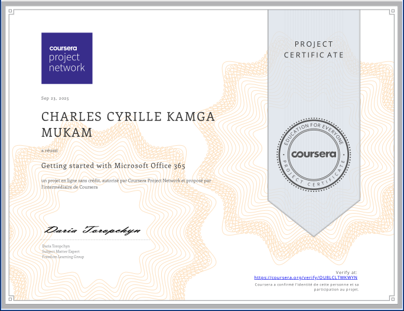
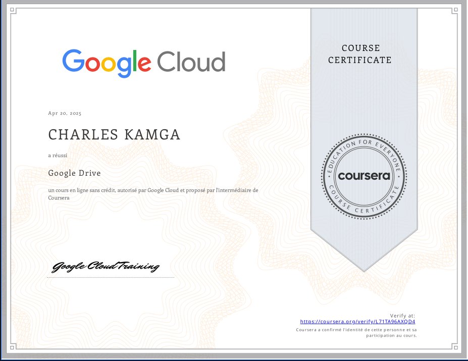
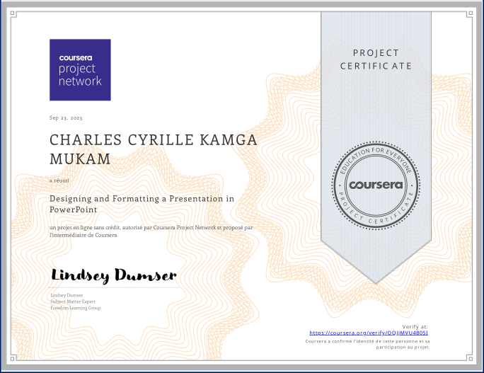

Mes Certifications
Introduction to Cybersecurity Careers
IBM via CourseraIoT Wireless & Cloud Computing
Yonsei University via Coursera

Google Drive
Google Cloud via Coursera

Work Smarter, Not Harder
University of California, Irvine via CourseraSpeaking and Presenting
University of Michigan via Coursera
